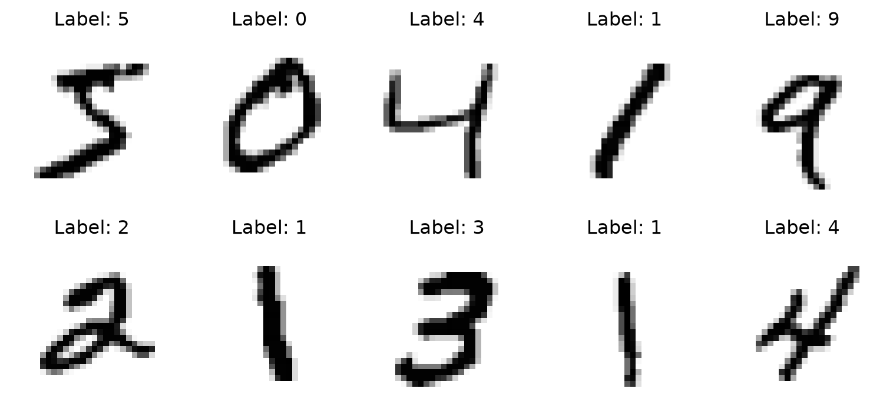
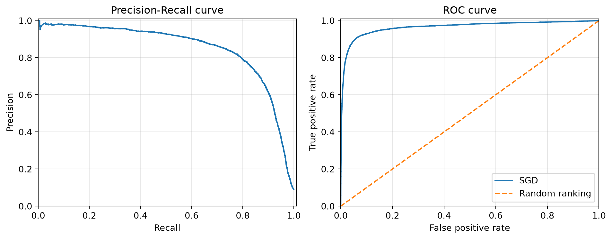
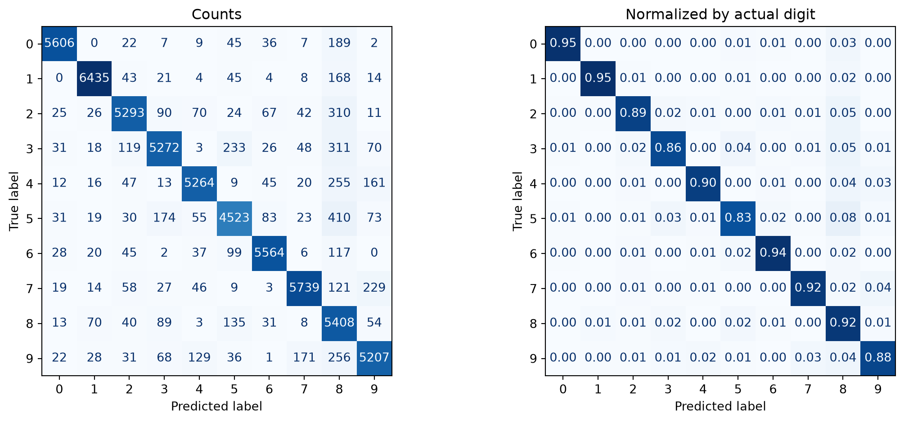
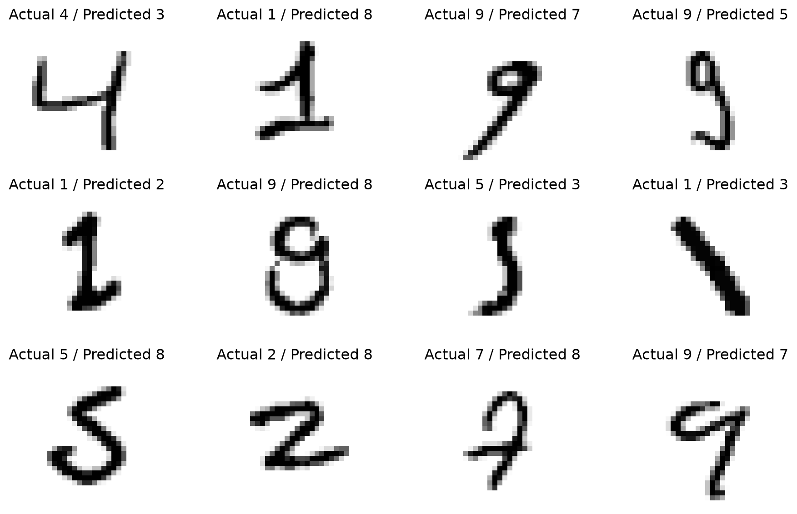

import matplotlib.pyplot as plt
import numpy as np
import pandas as pd
from sklearn.datasets import fetch_openml
from sklearn.ensemble import RandomForestClassifier
from sklearn.linear_model import SGDClassifier
from sklearn.metrics import (
ConfusionMatrixDisplay,
accuracy_score,
average_precision_score,
classification_report,
confusion_matrix,
f1_score,
precision_recall_curve,
precision_score,
recall_score,
roc_auc_score,
roc_curve,
)
from sklearn.model_selection import (
StratifiedKFold,
cross_val_predict,
train_test_split,
)
from sklearn.pipeline import make_pipeline
from sklearn.preprocessing import StandardScaler
from sklearn.svm import SVC
CHAPTER03_SEED = 42
# One named, shuffled splitter is reused throughout the chapter. Outer CV is
# deliberately serial; estimators may manage their own parallel work.
chapter03_cv = StratifiedKFold(
n_splits=3,
shuffle=True,
random_state=CHAPTER03_SEED,
)3 Chapter – Classification
3.1 Introduction
Classification assigns observations to categories. This chapter develops a complete classification workflow with MNIST: first a binary detector for the digit 5, then a ten-class digit classifier. The emphasis is not only on fitting models, but also on obtaining honest diagnostics, choosing an operating threshold without using the test set, and inspecting the mistakes a metric can hide.
MNIST contains 70,000 grayscale images of handwritten digits. Each 28 by 28 image is represented by 784 pixel intensities, and each target identifies one of ten digits (LeCun et al. 1998). Although MNIST is small by modern vision standards, it is large enough to expose important issues involving class imbalance, computation, and evaluation.
NoteLearning objectives
After completing this chapter, you should be able to:
- distinguish binary and multiclass classification tasks;
- create reproducible stratified cross-validation folds;
- interpret confusion matrices, precision, recall, F1, ROC AUC, and Precision-Recall curves;
- explain why out-of-fold predictions are diagnostics rather than a final test result;
- select a decision threshold on validation data and evaluate it once on independent test data;
- compare One-versus-Rest and One-versus-One multiclass strategies;
- place scaling inside a pipeline and inspect actual misclassified images.
3.2 Data and Reproducible Setup
Scikit-Learn exposes MNIST through OpenML (Scikit-learn developers 2025). Pinning version=1 prevents a later OpenML dataset revision from silently changing the chapter’s data.
mnist = fetch_openml(
"mnist_784",
version=1,
as_frame=False,
parser="auto",
)
# OpenML supplies floating-point pixel values. float32 halves feature memory
# relative to float64 and is sufficient for these demonstrations.
X_mnist = mnist.data.astype(np.float32)
y_mnist_text = mnist.target
print("Feature matrix:", X_mnist.shape, X_mnist.dtype)
print("Target vector:", y_mnist_text.shape, y_mnist_text.dtype)Feature matrix: (70000, 784) float32
Target vector: (70000,) objectThe OpenML targets are strings such as "5". Scikit-Learn classifiers do not require labels to be numeric; strings are valid class labels. We convert them to uint8 only because numeric digits are convenient for plotting, comparison, and storage.
y_mnist = y_mnist_text.astype(np.uint8)
# The standard MNIST benchmark uses the first 60,000 observations for training
# and the final 10,000 for the independent test set.
X_train = X_mnist[:60000]
X_test = X_mnist[60000:]
y_train = y_mnist[:60000]
y_test = y_mnist[60000:]
print("Training set:", X_train.shape, y_train.shape)
print("Test set:", X_test.shape, y_test.shape)Training set: (60000, 784) (60000,)
Test set: (10000, 784) (10000,)Pixel values range from 0 (black) to 255 (white). Dividing by 255 is normalization to a fixed range, whereas StandardScaler subtracts a training-fold mean and divides by a training-fold standard deviation. These operations are not interchangeable. Later, standardization is placed inside a pipeline to prevent validation-fold leakage.
fig, axes = plt.subplots(2, 5, figsize=(8, 4))
for image, label, ax in zip(X_train[:10], y_train[:10], axes.ravel()):
ax.imshow(image.reshape(28, 28), cmap="binary")
ax.set_title(f"Label: {label}")
ax.axis("off")
fig.tight_layout()
plt.show()
3.3 A Practical Classification Workflow
A defensible workflow separates model development from final evaluation:
- Define the target and the errors that matter.
- Reserve an independent test set and do not use its labels during development.
- Build preprocessing and the estimator as one pipeline when preprocessing learns from data.
- Use stratified cross-validation for model diagnostics and comparison.
- Inspect confusion matrices, class-specific metrics, and individual errors.
- Use separate validation data to choose any operational threshold.
- Freeze the model and threshold, then evaluate exactly once on the test set.
The examples below follow this sequence. Cross-validation results guide development; they do not replace the final independent test evaluation.
3.4 Binary Classification: Detecting the Digit 5
The binary target is True for a 5 and False for every other digit.
y_train_is_5 = y_train == 5
y_test_is_5 = y_test == 5
print(f"Positive-class prevalence: {y_train_is_5.mean():.2%}")Positive-class prevalence: 9.04%The Boolean output of the classifier below is not an inherent property of binary classification. It occurs because the model is fitted to Boolean targets. If targets were "five" and "other", predict() would return those strings.
3.4.1 The Estimator API
SGDClassifier is a scalable linear classifier suitable for all 60,000 training images. The following prediction uses a test observation to demonstrate the prediction API, as it would be used on a newly arrived image. Its test label is intentionally not inspected here, so this example cannot influence model or threshold selection.
binary_api_clf = SGDClassifier(random_state=CHAPTER03_SEED)
binary_api_clf.fit(X_train, y_train_is_5)
api_prediction = binary_api_clf.predict(X_test[[0]])
print("Predicted 'is 5' status:", api_prediction[0])Predicted 'is 5' status: False3.4.2 Out-of-Fold Diagnostics
Accuracy can be misleading here: always predicting False would be correct about 91% of the time. We therefore obtain one out-of-fold (OOF) decision score per training observation. Each score comes from a model that did not train on that observation. The class predictions, confusion matrix, threshold curves, and metrics below all reuse this single expensive computation.
OOF predictions are development diagnostics. They combine predictions from several fitted models and are not the output of one deployable model; nor are they a substitute for an independent test evaluation.
binary_sgd_clf = SGDClassifier(random_state=CHAPTER03_SEED)
binary_sgd_oof_scores = cross_val_predict(
binary_sgd_clf,
X_train,
y_train_is_5,
cv=chapter03_cv,
method="decision_function",
)
binary_sgd_oof_pred = binary_sgd_oof_scores >= 0.03.4.3 Confusion Matrix, Precision, Recall, and F1
In every confusion matrix in this chapter, rows are actual classes and columns are predicted classes. With labels ordered as [False, True], the first row is actual “not 5” and the second row is actual “5”.
binary_sgd_cm = confusion_matrix(
y_train_is_5,
binary_sgd_oof_pred,
labels=[False, True],
)
tn, fp, fn, tp = binary_sgd_cm.ravel()
binary_sgd_cm_table = pd.DataFrame(
binary_sgd_cm,
index=["Actual: not 5", "Actual: 5"],
columns=["Predicted: not 5", "Predicted: 5"],
)
binary_sgd_cm_table| Predicted: not 5 | Predicted: 5 | |
|---|---|---|
| Actual: not 5 | 53735 | 844 |
| Actual: 5 | 1290 | 4131 |
Precision asks, “Of the images predicted as 5, how many are 5?”
\[ \operatorname{Precision}=\frac{TP}{TP+FP}. \]
Recall asks, “Of all actual 5s, how many were detected?”
\[ \operatorname{Recall}=\frac{TP}{TP+FN}. \]
The F1-score is their harmonic mean:
\[ F_1=2\frac{\operatorname{Precision}\operatorname{Recall}} {\operatorname{Precision}+\operatorname{Recall}}. \]
print(f"Accuracy : {accuracy_score(y_train_is_5, binary_sgd_oof_pred):.4f}")
print(f"Precision: {precision_score(y_train_is_5, binary_sgd_oof_pred):.4f}")
print(f"Recall : {recall_score(y_train_is_5, binary_sgd_oof_pred):.4f}")
print(f"F1 : {f1_score(y_train_is_5, binary_sgd_oof_pred):.4f}")Accuracy : 0.9644
Precision: 0.8304
Recall : 0.7620
F1 : 0.79473.4.4 Precision-Recall and ROC Curves
SGDClassifier predicts the positive class when its decision score is at least zero. Raising that threshold usually increases precision and lowers recall; lowering it usually does the opposite.
binary_sgd_precision, binary_sgd_recall, binary_sgd_pr_thresholds = (
precision_recall_curve(y_train_is_5, binary_sgd_oof_scores)
)
binary_sgd_fpr, binary_sgd_tpr, binary_sgd_roc_thresholds = roc_curve(
y_train_is_5,
binary_sgd_oof_scores,
)fig, axes = plt.subplots(1, 2, figsize=(10, 4))
axes[0].plot(binary_sgd_recall, binary_sgd_precision)
axes[0].set(
xlabel="Recall",
ylabel="Precision",
xlim=(0, 1.01),
ylim=(0, 1.01),
title="Precision-Recall curve",
)
axes[1].plot(binary_sgd_fpr, binary_sgd_tpr, label="SGD")
axes[1].plot([0, 1], [0, 1], "--", label="Random ranking")
axes[1].set(
xlabel="False positive rate",
ylabel="True positive rate",
xlim=(0, 1),
ylim=(0, 1.01),
title="ROC curve",
)
axes[1].legend()
for ax in axes:
ax.grid(alpha=0.3)
fig.tight_layout()
plt.show()
ROC AUC is a ranking measure. It equals the probability that a randomly selected positive receives a higher score than a randomly selected negative, plus half the probability of a tied score. Explicitly accounting for ties is important for models such as random forests, which can produce repeated probability values. An AUC near 0.5 represents random ranking, not necessarily 50% accuracy (Scikit-learn developers 2025).
print(
"SGD average precision: "
f"{average_precision_score(y_train_is_5, binary_sgd_oof_scores):.4f}"
)
print(
"SGD ROC AUC: "
f"{roc_auc_score(y_train_is_5, binary_sgd_oof_scores):.4f}"
)SGD average precision: 0.8517
SGD ROC AUC: 0.9652For a rare positive class, the Precision-Recall curve often exposes false-positive costs more directly than the ROC curve. Neither curve chooses an operating threshold automatically; that choice depends on the application.
3.4.5 Comparing Two Binary Models
A random forest provides probabilities rather than signed decision scores. The forest parallelizes tree construction internally, while outer cross-validation remains serial. This avoids nesting an n_jobs=-1 outer CV loop around another parallel workload.
binary_forest_clf = RandomForestClassifier(
n_estimators=60,
max_depth=18,
random_state=CHAPTER03_SEED,
n_jobs=-1,
)
binary_forest_oof_proba = cross_val_predict(
binary_forest_clf,
X_train,
y_train_is_5,
cv=chapter03_cv,
method="predict_proba",
)
# Boolean classes are ordered [False, True], so column 1 is P(is 5).
binary_forest_oof_scores = binary_forest_oof_proba[:, 1]
binary_forest_oof_pred = binary_forest_oof_scores >= 0.5The following table consolidates comparable OOF diagnostics. It should be read together with computational cost and the intended operating region, not as an automatic model-selection rule.
def chapter03_binary_metrics(y_true, y_pred, y_score):
return {
"Accuracy": accuracy_score(y_true, y_pred),
"Precision": precision_score(y_true, y_pred),
"Recall": recall_score(y_true, y_pred),
"F1": f1_score(y_true, y_pred),
"Average precision": average_precision_score(y_true, y_score),
"ROC AUC": roc_auc_score(y_true, y_score),
}
binary_model_comparison = pd.DataFrame.from_dict(
{
"Linear SGD": chapter03_binary_metrics(
y_train_is_5,
binary_sgd_oof_pred,
binary_sgd_oof_scores,
),
"Random forest": chapter03_binary_metrics(
y_train_is_5,
binary_forest_oof_pred,
binary_forest_oof_scores,
),
},
orient="index",
)
binary_model_comparison.round(4)| Accuracy | Precision | Recall | F1 | Average precision | ROC AUC | |
|---|---|---|---|---|---|---|
| Linear SGD | 0.9644 | 0.8304 | 0.7620 | 0.7947 | 0.8517 | 0.9652 |
| Random forest | 0.9875 | 0.9891 | 0.8716 | 0.9267 | 0.9878 | 0.9981 |
3.5 Selecting a Threshold Without Test Leakage
For an operational example, suppose the linear detector must achieve at least 90% precision. Threshold selection now uses a dedicated stratified validation split, not the OOF scores used for the preceding model comparison and never the test labels.
The fitted model and selected threshold remain fixed after validation. We intentionally do not refit after threshold selection: refitting could change the score scale and invalidate the chosen threshold.
(
X_binary_fit,
X_binary_valid,
y_binary_fit,
y_binary_valid,
) = train_test_split(
X_train,
y_train_is_5,
test_size=0.20,
stratify=y_train_is_5,
random_state=CHAPTER03_SEED,
)
final_binary_clf = SGDClassifier(random_state=CHAPTER03_SEED)
final_binary_clf.fit(X_binary_fit, y_binary_fit)
binary_valid_scores = final_binary_clf.decision_function(X_binary_valid)
valid_precision, valid_recall, valid_thresholds = precision_recall_curve(
y_binary_valid,
binary_valid_scores,
)
target_precision = 0.90
qualifying = np.flatnonzero(valid_precision[:-1] >= target_precision)
if qualifying.size == 0:
raise RuntimeError("Validation precision target was not achieved.")
# Among qualifying observed thresholds, retain the one with greatest recall.
best_qualifying_position = np.argmax(valid_recall[:-1][qualifying])
selected_index = qualifying[best_qualifying_position]
selected_binary_threshold = valid_thresholds[selected_index]
print(f"Selected threshold: {selected_binary_threshold:.2f}")
print(f"Validation precision: {valid_precision[selected_index]:.4f}")
print(f"Validation recall: {valid_recall[selected_index]:.4f}")Selected threshold: 1563.78
Validation precision: 0.9006
Validation recall: 0.69373.5.1 One Final Independent Test Evaluation
This is the chapter’s only use of y_test for evaluation. The estimator and threshold have already been fixed. The test scores and predictions are computed once and reused for all final metrics.
final_binary_test_scores = final_binary_clf.decision_function(X_test)
final_binary_test_pred = final_binary_test_scores >= selected_binary_threshold
final_binary_test_results = pd.Series(
{
"Accuracy": accuracy_score(y_test_is_5, final_binary_test_pred),
"Precision": precision_score(y_test_is_5, final_binary_test_pred),
"Recall": recall_score(y_test_is_5, final_binary_test_pred),
"F1": f1_score(y_test_is_5, final_binary_test_pred),
"ROC AUC": roc_auc_score(y_test_is_5, final_binary_test_scores),
},
name="Independent test",
)
final_binary_test_results.round(4)Accuracy 0.9657
Precision 0.8950
Recall 0.6973
F1 0.7839
ROC AUC 0.9621
Name: Independent test, dtype: float64The test result estimates the performance of this complete decision system: the fixed fitted classifier plus the fixed validation-selected threshold. A difference between validation and test precision is expected because both are finite samples.
3.6 Multiclass Classification
The original task assigns each image to one of ten classes. Some estimators handle multiclass targets directly. Others reduce the problem to binary tasks (Scikit-learn developers 2025):
- One-versus-Rest (OvR) trains one classifier per class, so ten classes require 10 classifiers.
- One-versus-One (OvO) trains one classifier per class pair, so ten classes require \(10(10-1)/2=45\) classifiers.
SGDClassifier uses OvR for multiclass classification. Kernel SVC uses OvO internally. OvO can help kernel methods because each pairwise estimator sees only two classes, but kernel SVC training still grows poorly with the number of observations.
3.6.1 Kernel SVC on a Stratified Working Subset
Fitting several kernel SVC variants on all 60,000 images is unnecessarily slow for a strategy demonstration. We therefore draw one documented, shuffled, stratified working subset of 10,000 training observations. This subset is used only for kernel SVC examples; scalable linear and tree models elsewhere in the chapter use the full MNIST training set.
Pixels are divided by 255 for the kernel model. This maps the known intensity range to \([0,1]\), avoids modifying the full arrays, and keeps the working copy as float32.
X_kernel_work, _, y_kernel_work, _ = train_test_split(
X_train,
y_train,
train_size=10000,
stratify=y_train,
random_state=CHAPTER03_SEED,
)
X_kernel_work = X_kernel_work / np.float32(255.0)
print(X_kernel_work.shape, X_kernel_work.dtype)
print(np.bincount(y_kernel_work))(10000, 784) float32
[ 987 1124 993 1022 974 904 986 1044 975 991]kernel_svc_clf = SVC(
decision_function_shape="ovr",
cache_size=500,
random_state=CHAPTER03_SEED,
)
kernel_svc_clf.fit(X_kernel_work, y_kernel_work)
kernel_example = X_kernel_work[[0]]
kernel_prediction = kernel_svc_clf.predict(kernel_example)
kernel_scores = kernel_svc_clf.decision_function(kernel_example)
kernel_score_index = np.argmax(kernel_scores[0])
print("Prediction:", kernel_prediction[0])
print("Class from largest score:", kernel_svc_clf.classes_[kernel_score_index])
print("Decision-score shape:", kernel_scores.shape)Prediction: 6
Class from largest score: 6
Decision-score shape: (1, 10)Although decision_function_shape="ovr" returns one transformed score per class, SVC training remains OvO. Setting the option to "ovo" would expose 45 pairwise values rather than ten class-oriented values; fitting another identical kernel model merely to display that shape would add substantial cost without improving the demonstration.
Score positions are indices into classes_, not class labels. This distinction matters when labels are strings or nonconsecutive numbers:
predicted_label = classifier.classes_[np.argmax(class_scores)]3.6.2 Scalable Multiclass SGD on Full MNIST
Linear SGD scales to all 60,000 training images. Because its optimization is sensitive to feature scales, StandardScaler and the classifier are placed in one pipeline. During cross-validation, the scaler is fitted only on each training fold. Passing float32 avoids the previous chapter pattern of creating repeated float64 copies.
Only one multiclass OOF prediction pass is performed. The same predictions support accuracy, class-specific metrics, confusion matrices, and image-level error inspection.
multiclass_sgd_clf = make_pipeline(
StandardScaler(),
SGDClassifier(random_state=CHAPTER03_SEED),
)
multiclass_sgd_oof_pred = cross_val_predict(
multiclass_sgd_clf,
X_train,
y_train,
cv=chapter03_cv,
method="predict",
)
print(
"OOF multiclass accuracy: "
f"{accuracy_score(y_train, multiclass_sgd_oof_pred):.4f}"
)OOF multiclass accuracy: 0.9052print(
classification_report(
y_train,
multiclass_sgd_oof_pred,
labels=np.arange(10),
digits=3,
)
) precision recall f1-score support
0 0.969 0.946 0.957 5923
1 0.968 0.954 0.961 6742
2 0.924 0.888 0.906 5958
3 0.915 0.860 0.886 6131
4 0.937 0.901 0.919 5842
5 0.877 0.834 0.855 5421
6 0.949 0.940 0.945 5918
7 0.945 0.916 0.930 6265
8 0.717 0.924 0.807 5851
9 0.895 0.875 0.885 5949
accuracy 0.905 60000
macro avg 0.910 0.904 0.905 60000
weighted avg 0.911 0.905 0.907 60000
The macro average gives every digit equal weight. The weighted average weights each digit by its support. In single-label multiclass classification, micro-averaged precision, recall, and F1 equal accuracy.
3.6.3 Multiclass Confusion and Error Analysis
The raw matrix emphasizes counts; the row-normalized matrix answers: “Among images whose actual class is this row, where did the model send them?” Thus every row approximately sums to one, and cell \((5,3)\) is the proportion of actual 5s predicted as 3.
fig, axes = plt.subplots(1, 2, figsize=(12, 5))
ConfusionMatrixDisplay.from_predictions(
y_train,
multiclass_sgd_oof_pred,
labels=np.arange(10),
cmap="Blues",
colorbar=False,
ax=axes[0],
)
axes[0].set_title("Counts")
ConfusionMatrixDisplay.from_predictions(
y_train,
multiclass_sgd_oof_pred,
labels=np.arange(10),
normalize="true",
values_format=".2f",
cmap="Blues",
colorbar=False,
ax=axes[1],
)
axes[1].set_title("Normalized by actual digit")
fig.tight_layout()
plt.show()
To focus on errors, remove the diagonal from the row-normalized matrix and rank the remaining cells.
multiclass_normalized_cm = confusion_matrix(
y_train,
multiclass_sgd_oof_pred,
labels=np.arange(10),
normalize="true",
)
multiclass_error_cm = multiclass_normalized_cm.copy()
np.fill_diagonal(multiclass_error_cm, 0.0)
largest_flat_indices = np.argsort(multiclass_error_cm.ravel())[::-1][:10]
largest_actual, largest_predicted = np.unravel_index(
largest_flat_indices,
multiclass_error_cm.shape,
)
largest_confusions = pd.DataFrame(
{
"Actual digit": largest_actual,
"Predicted digit": largest_predicted,
"Row-normalized error": multiclass_error_cm[
largest_actual,
largest_predicted,
],
}
)
largest_confusions.round(4)| Actual digit | Predicted digit | Row-normalized error | |
|---|---|---|---|
| 0 | 5 | 8 | 0.0756 |
| 1 | 2 | 8 | 0.0520 |
| 2 | 3 | 8 | 0.0507 |
| 3 | 4 | 8 | 0.0436 |
| 4 | 9 | 8 | 0.0430 |
| 5 | 3 | 5 | 0.0380 |
| 6 | 7 | 9 | 0.0366 |
| 7 | 5 | 3 | 0.0321 |
| 8 | 0 | 8 | 0.0319 |
| 9 | 9 | 7 | 0.0287 |
Aggregate tables suggest where to look, but actual images reveal ambiguity, unusual writing styles, cropping, and model limitations. The following figure performs a real inspection of misclassified OOF observations rather than displaying a prebuilt illustration.
misclassified_indices = np.flatnonzero(y_train != multiclass_sgd_oof_pred)
inspection_indices = misclassified_indices[:12]
fig, axes = plt.subplots(3, 4, figsize=(10, 6))
for observation_index, ax in zip(inspection_indices, axes.ravel()):
ax.imshow(X_train[observation_index].reshape(28, 28), cmap="binary")
ax.set_title(
f"Actual {y_train[observation_index]} / "
f"Predicted {multiclass_sgd_oof_pred[observation_index]}"
)
ax.axis("off")
fig.tight_layout()
plt.show()
Because these are OOF errors, each displayed prediction came from a fold model that did not train on that image. They remain development diagnostics, however, and repeated inspection can indirectly adapt decisions to the training set.
3.7 Chapter Summary
- Labels may be strings, numbers, or Booleans. Prediction types follow the fitted target labels.
- Accuracy is weak for imbalanced tasks; confusion matrices, precision, recall, F1, and threshold curves reveal different error costs.
- One OOF score or prediction pass can support many diagnostics. Recomputing it for every metric wastes time.
- OOF predictions describe a cross-validation procedure, not one final fitted model and not an independent test result.
- ROC AUC measures ranking across thresholds and gives half credit to score ties. It does not select a deployment threshold.
- Thresholds belong to the decision system. Select them on dedicated validation data, freeze them with the model, and evaluate once on test data.
- Pipelines fit learned preprocessing inside each fold. Fixed pixel-range normalization and statistical standardization solve different problems.
- Kernel SVC demonstrations use a documented stratified subset because of nonlinear training cost; scalable models use full MNIST.
- Multiclass confusion matrices must state that rows are actual classes and columns are predictions. Image inspection completes the error-analysis loop.
3.8 Exercises
- Compute the accuracy of a classifier that always predicts “not 5.” Explain why its accuracy is high while its recall is zero.
- From
binary_sgd_cm, calculate specificity and false positive rate manually. Verify that they sum to one. - Change
target_precisionto 0.95 and rerun only the validation-threshold and final-test sections. Describe the effect on recall, and explain why the test result must not be used to revise the threshold afterward. - Plot the random forest Precision-Recall curve using the existing
binary_forest_oof_scores. Compare its high-precision region with SGD without callingcross_val_predict()again. - Replace the fixed-range normalization in the kernel SVC demonstration with a pipeline containing
StandardScaler. Keep the same working subset and compare training time and subset accuracy. - Use
largest_confusions.iloc[0]to display 12 images from the most prominent actual/predicted confusion pair. Identify at least two visual patterns that could explain the errors. - Train a full-MNIST multiclass
RandomForestClassifierwithout outer parallel CV. Compare its OOF accuracy and macro F1 with the scalable SGD model, and discuss memory and runtime. - Create a toy target with labels
"five"and"other", fit a small classifier, and verify the dtype and values returned bypredict().
3.9 Conclusion
Classification is a decision process, not just a call to fit() and predict(). A credible result connects the target definition, stratified validation, suitable metrics, threshold policy, computational constraints, and inspection of concrete errors. In this chapter, development diagnostics stayed within the training data, the operational threshold came from dedicated validation data, and the independent test labels were used exactly once after the model and threshold were fixed. That separation is the central habit to carry from MNIST to higher-stakes classification problems.